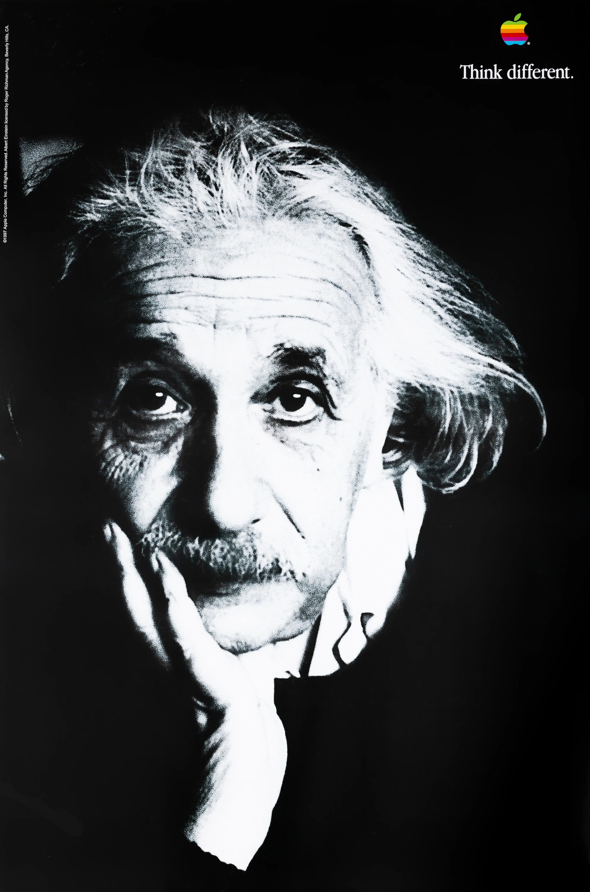

A media analysis of Apple's most influential advertising campaign — its visual design, its borrowed credibility, and the subliminal psychology underneath.

1997. Apple is twelve weeks from bankruptcy. Steve Jobs returns as interim CEO. His first move is not a product — it's a campaign. And the campaign has no product in it at all.
Think Different is not visually original — and that's the point. Its power comes from fluency in an established design tradition: the Swiss International Style. Grid, white space, objective photography, neutral type. A language that signals seriousness.
Apple's art directors applied this tradition to advertising in a way that made tech look like fine art.
Documentary-style grain. Candid framing. The image looks captured, not staged — this signals authenticity and weight.
The composition is mostly empty. What you remove forces the eye to settle on what remains — the face, and the logo.
Set small, lowercase, with no emphasis. "Think different." reads as a quiet statement, not a shout. Restraint as authority.
The rainbow Apple logo is the only color in the entire composition. In monochrome, color becomes a focal point of magnetic force.
Every element of this poster is a design decision. Let's break it down.
Rainbow Apple mark. The only color in the composition. Eyes go here first, immediately, unavoidably. Placement mimics a newspaper masthead — top left signals the author.
Black and white, grainy, candid. Einstein looks pensive, not posed. The grain signals authenticity. The monochrome signals seriousness.
Large portions of the poster are near-black or empty. The emptiness is the design. It makes the face feel significant.
"Think different." Lowercase. No period in early versions. Set in Garamond — a typeface associated with books and permanence, not technology.
In a black and white composition, color is not decoration — it is direction. The eye moves to color automatically, neurologically, before conscious thought. Placing the rainbow logo in a monochrome field makes it the most powerful element in the frame.
The rainbow logo was Apple's mark from 1977 to 1998 — the era of the original Macintosh, the era of creative rebellion. Using it here is a signal: we are still that company.
Swiss Modernism taught us that negative space is not the absence of design — it is design. What you leave empty is a decision. And in advertising, emptiness communicates something specific: confidence.
Apple's Think Different posters don't need to explain themselves. The empty space is saying: the face is enough. The logo is enough. We don't need to prove anything else.
None of these people used Apple computers. Most were dead before the Mac existed. So what is Apple doing by placing their logo beside them?
The archetypal genius — universally recognized, culturally undeniable. His face shorthand for intelligence itself.
EBroke the rules of visual representation. Apple is saying: rule-breaking in art = rule-breaking in technology.
PChanged the world with no technology at all — only ideas. Apple's message: ideas are the product.
GFirst woman to fly solo across the Atlantic. Speaks to breaking barriers — not just thinking, but doing.
ACountercultural icon. Bridges the creative class Apple was targeting — musicians, artists, designers.
JVoice of a generation that rejected conformity. Apple says: we belong to that tradition of refusal.
BThis is not a campaign about computers. It is a campaign about identity. Psychologists call the mechanism identity-based persuasion — you are not being sold a product, you are being sold a version of yourself.
The message is never stated. It is implied by composition, proximity, and repetition across hundreds of outdoor boards, print ads, and a television spot.
Repeated across Einstein, Picasso, Gandhi, Lennon, Earhart. The proximity is the argument. No text needed.
The viewer sees someone they admire. They want to be like that person. Apple is already in the frame.
The product is the ticket to the tribe. Not a computer — a membership. "You always had to be a little different to buy an Apple." — Jobs
The television spot — narrated by Richard Dreyfuss, written by Rob Siltanen — is worth analyzing as a piece of writing. The structure is not accidental. Each line does specific persuasive work.
Think Different ran from 1997 to 2002. In that time, Apple went from twelve weeks from bankruptcy to the most aspirational technology brand on the planet. The campaign did not cause this alone — but it began the repositioning.
Apple's stock price: $3.30. The company had lost 70% of its value in the preceding years.
The industry's highest advertising honor. Awarded to the "Crazy Ones" television spot.
Named one of the most influential advertising campaigns of the 20th century.
Ran until Apple had re-established its identity. Retired when the iMac, iPod, and OS X had taken over the brand story.
Restraint is a power move. Every element you remove forces the viewer to invest more — and investment creates meaning.
Black and white removes visual noise. The viewer can't be distracted by color. The face and the logo are all there is.
Negative space signals confidence. You don't need to fill the frame when the idea is strong enough to stand alone.
The rainbow logo is the only color. In monochrome, color becomes a gravitational center. The eye has no choice.
Lowercase. Small. No punctuation in early versions. The tagline whispers. Quiet authority, not a shout.
Every design decision — B&W photography, negative space, rainbow logo, lowercase type — is intentional and mutually reinforcing. The campaign works because it is a coherent visual system, not a collection of choices.
The campaign works psychologically because it sells identity, not product. The portraits create a tribe. Buying Apple is joining that tribe. The computer is the ticket, not the destination.
Using Einstein, Picasso, and Gandhi is an act of borrowed cultural authority — one of the most effective moves in advertising history. Apple didn't just make an ad. They made a mirror and told you who you'd see in it.
Any questions?